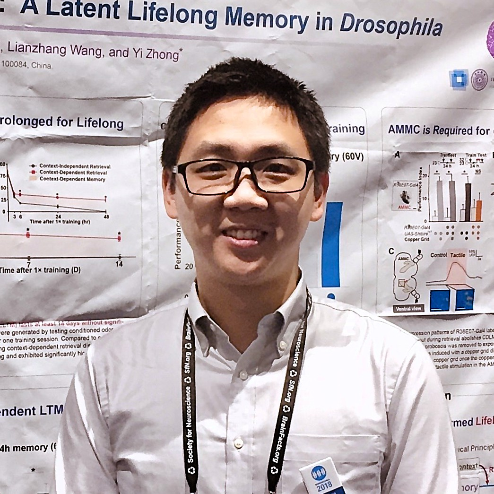
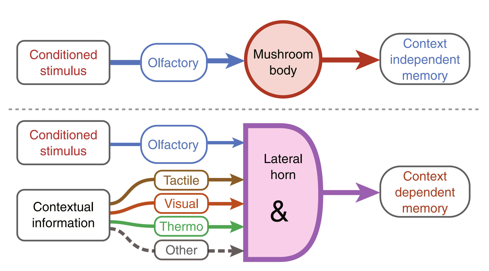
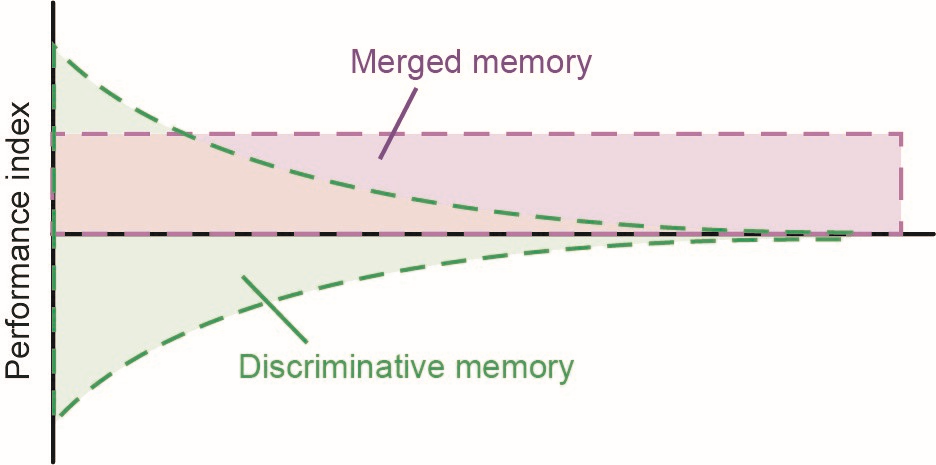
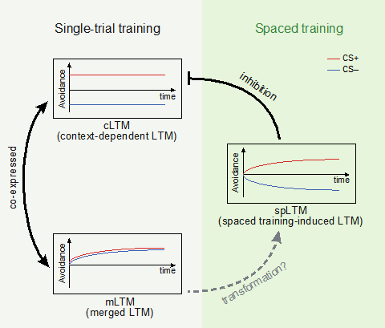
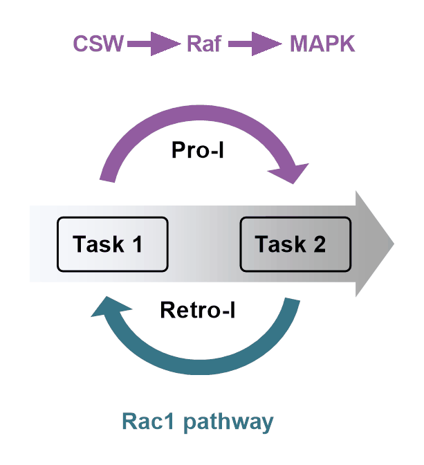

|
Bohan Zhao
Originally from China, I developed my passion for neuroscience while earning my Ph.D. at Tsinghua University under the mentorship of Yi Zhong. My research focused on how the brain encodes memory in Drosophila, leading to the discovery of "context-dependent memory" and "merged memory"—findings that advanced our understanding of how sensory stimuli shape long-term memory formation. Eager to expand my expertise, I then moved to Oxford as an EMBO Postdoctoral Fellow, working with Gero Miesenböck to study the neural mechanisms underlying sleep regulation, refining my skills in in vivo electrophysiology and multiphoton imaging.
I am now an AHA Postdoctoral Fellow in the lab of Li Ye at Scripps Research/HHMI, where I investigate how adipose tissue communicates with the brain to regulate behavior and physiology. Building on my previous work in memory and sleep, I now explore the neural circuits underlying brain-body communication. My research leverages viral-genetic tracing, whole-brain clearing, and in vivo whole-brain activity recording to uncover how disruptions in this dialogue contribute to metabolic and emotional disorders. By redefining the role of somatosensory pathways in metabolic regulation, I aim to lay the groundwork for new therapeutic approaches targeting metabolic and mood disorders.
Outside the lab, I enjoy exploring new hiking trails, teaching myself electric guitar, and thinking about big questions in neuroscience, psychology, and philosophy.
|

|
Research
My current research interests lie in how sensory information affects behavior and cognition, with a focus on developing therapeutic strategies for neurological and psychological disorders.
|
|

|
Long-term memory is formed immediately without the need for protein synthesis-dependent consolidation in Drosophila
Zhao B, Sun J, Zhang X, Mo H, Niu Y, Li Q, Wang L, Zhong Y.
Nat Commun 10, 4550 (2019). https://doi.org/10.1038/s41467-019-12436-7
Memory formation has long been thought to require protein synthesis-dependent consolidation. Challenging this view, we discovered a novel form of context-dependent long-term memory (cLTM) that forms within minutes and lasts a lifetime without requiring new protein synthesis. Unlike conventional long-term memories stored in the mushroom body, cLTM is encoded in the lateral horn, a higher-order olfactory center integrating multisensory inputs. This finding reveals an alternative sensory-driven mechanism for long-term memory formation, highlighting how environmental stimuli shape persistent neural representations beyond canonical molecular pathways.
|
|

|
Differential conditioning produces merged long-term memory in Drosophila
Zhao B, Sun J, Li Q, Zhong Y
eLife 10:e66499 (2021). https://doi.org/10.7554/eLife.66499
Memory not only encodes events but also shapes emotional perception and decision-making. We identified a phenomenon called "merged memory" (mLTM), in which negative valence is broadly assigned to an entire experience rather than its precise details. This generalization mechanism suggests that the brain prioritizes emotional context over specific sensory features, enabling organisms to quickly assess threats but at the cost of memory precision. This work provides insights into how emotional biases emerge, with potential implications for understanding memory distortions in anxiety disorders, PTSD, and decision-making.
|
|

|
Exclusion and Co-expression of Aversive Olfactory Long-Term Memories in Drosophila
Zhao B, Zhang X, Zhao J, Li Q
Neurosci Bull 38, 657-660 (2022). https://doi.org/10.1007/s12264-022-00830-z
Memory is not a singular entity—multiple memory systems interact dynamically to guide behavior. Building on our previous work, we examined how spaced long-term memory (spLTM), context-dependent long-term memory (cLTM), and merged long-term memory (mLTM) compete or coexist in shaping decision-making. Our findings suggest that the brain balances memory precision and behavioral flexibility by integrating multiple sensory and contextual inputs. By revealing how memories are prioritized and interact within the olfactory system, this work provides a framework for understanding how the brain resolves conflicting sensory experiences and maintains adaptive learning.
|
|

|
Genetic dissection of mutual interference between two consecutive learning tasks in Drosophila
Zhao J, Zhang X, Zhao B, Hu W, Diao T, Wang L, Li Q
eLife 12:e83516 (2023). https://doi.org/10.7554/eLife.83516
The ability to learn new information is constrained by prior experiences, yet the molecular basis of memory interference remains unclear. We identified distinct neural pathways regulating two forms of interference:
- Proactive interference, where prior learning disrupts new learning, is mediated by the CSW/Raf/MAPK pathway.
- Retroactive interference, where new learning weakens prior memory, is controlled by the Rac1-mediated active forgetting pathway.
These findings reveal a molecular framework for memory stability and competition, shedding light on how sensory-driven learning and forgetting processes shape adaptive behavior.
|
Awards
- AHA Postdoctoral Fellowship, American Heart Association, 2024-2025
- Dorris Scholar Award, The Scripps Research Institute, 2023
- EMBO Postdoctoral Fellowship, European Molecular Biology Organization, 2022-2023
- First-Class Comprehensive Scholarship/Optics Valley of China Scholarship, 2020
- Award for Outstanding Research Achievement, IDG/McGovern-Tsinghua, 2019
- National Graduate Scholarship (the highest honor for graduate students in China), 2019
- Top Talent Scholarship, Sichuan University, 2013
|
|
{kind=link}